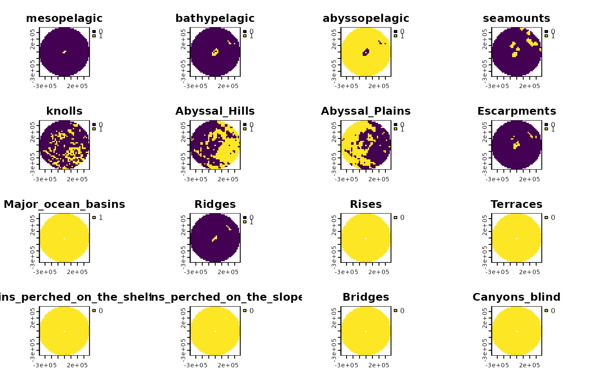

Get a set of feature data for a spatial grid
get_features.RdThis is a wrapper of get_bathymetry(), get_seamounts_buffered(), get_knolls(), get_geomorphology(), get_coral_habitat(), and get_enviro_regions(). See the individual functions for details.
Usage
get_features(
spatial_grid = NULL,
raw = FALSE,
features = c("bathymetry", "seamounts", "knolls", "geomorphology", "corals",
"enviro_regions"),
bathy_resolution = 1,
seamount_buffer = 30000,
antipatharia_threshold = 22,
octocoral_threshold = 2,
enviro_clusters = NULL,
max_enviro_clusters = 6,
antimeridian = NULL
)Arguments
- spatial_grid
sforterra::rast()grid, e.g. created usingget_grid(). Alternatively, if raw data is required, ansfpolygon can be provided, e.g. created usingget_boundary(), and setraw = TRUE.- raw
logicalif TRUE,spatial_gridshould be ansfpolygon, and the raw feature data in that polygon(s) will be returned. Note that this will be a list object, since raster andsfdata may be returned.- features
a vector of feature names, can include: "bathymetry", "seamounts", "knolls", "geomorphology", "corals", "enviro_regions"
- bathy_resolution
numeric; the resolution (in minutes) of data to pull from the ETOPO 2022 Global Relief model. Values less than 1 can only be 0.5 (30 arc seconds) and 0.25 (15 arc seconds)- seamount_buffer
numeric; the distance from the seamount peak to include in the output. Distance should be in the same units as the area_polygon or spatial_grid provided, use e.g.sf::st_crs(spatial_grid, parameters = TRUE)$units_gdalto check what units your planning grid or area polygon is in (works for raster as well as sf objects)- antipatharia_threshold
numericbetween 0 and 100; the threshold value for habitat suitability for antipatharia corals to be considered present (default is 22, as defined in Yesson et al., 2017)- octocoral_threshold
numericbetween 0 and 7; the threshold value for how many species (of 7) should be predicted present in an area for octocorals to be considered present (default is 2)- enviro_clusters
numeric; the number of environmental regions to cluster the data into - to be used when a clustering algorithm is not necessary (default is NULL)- max_enviro_clusters
numeric; the maximum number of environmental regions to try when using the clustering algorithm (default is 8)- antimeridian
Does
spatial_gridspan the antimeridian? If so, this should be set toTRUE, otherwise set toFALSE. If set toNULL(default) the function will try to check if data spans the antimeridian and set this appropriately.
Value
If raw = TRUE, a list of feature data is returned (mixed raster and sf objects). If a spatial_grid is supplied, a multi-layer raster or sf object of gridded data is returned, depending on the spatial_grid format.
Examples
# Grab EEZ data first
bermuda_eez <- get_boundary(name = "Bermuda")
# Get raw data for Bermuda's EEZ
raw_data <- get_features(spatial_grid = bermuda_eez, raw = TRUE)
#> Getting depth zones...
#> This may take seconds to minutes, depending on grid size
#> Getting seamount data...
#> Spherical geometry (s2) switched off
#> although coordinates are longitude/latitude, st_intersection assumes that they
#> are planar
#> Warning: attribute variables are assumed to be spatially constant throughout all geometries
#> Warning: st_buffer does not correctly buffer longitude/latitude data
#> dist is assumed to be in decimal degrees (arc_degrees).
#> Spherical geometry (s2) switched on
#> Getting knoll data...
#> Spherical geometry (s2) switched off
#> although coordinates are longitude/latitude, st_intersection assumes that they
#> are planar
#> Warning: attribute variables are assumed to be spatially constant throughout all geometries
#> Spherical geometry (s2) switched on
#> Getting geomorphology data...
#> Getting coral data...
#> Getting environmental regions data... This could take several minutes
# Get feature data in a spatial grid
bermuda_grid <- get_grid(boundary = bermuda_eez, crs = '+proj=laea +lon_0=-64.8108333 +lat_0=32.3571917 +datum=WGS84 +units=m +no_defs', resolution = 20000)
features_gridded <- get_features(spatial_grid = bermuda_grid)
#> Getting depth zones...
#> This may take seconds to minutes, depending on grid size
#> Getting seamount data...
#> Spherical geometry (s2) switched off
#> although coordinates are longitude/latitude, st_intersection assumes that they
#> are planar
#> Warning: attribute variables are assumed to be spatially constant throughout all geometries
#> Spherical geometry (s2) switched on
#> Getting knoll data...
#> Spherical geometry (s2) switched off
#> although coordinates are longitude/latitude, st_intersection assumes that they
#> are planar
#> Warning: attribute variables are assumed to be spatially constant throughout all geometries
#> Spherical geometry (s2) switched on
#> Getting geomorphology data...
#> Getting coral data...
#> Getting environmental regions data... This could take several minutes
terra::plot(features_gridded)
